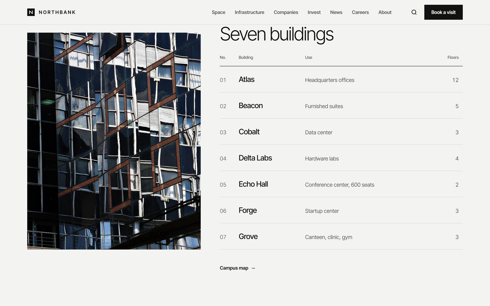
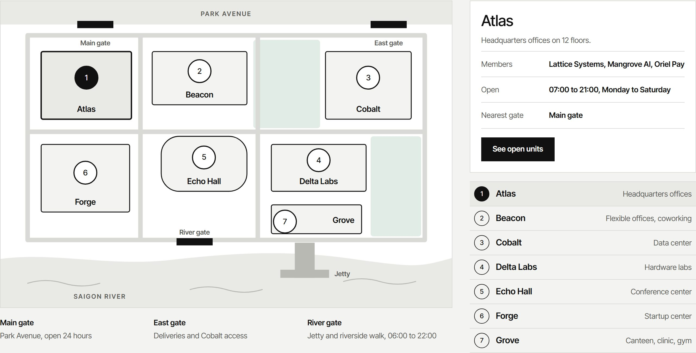

TECHNOLOGY PARK / MULTI-PAGE WEBSITE / REDESIGN
Northbank
A 32-page website for a technology park that routes each visitor by what they need, and shows the place at its real scale.

One website, four very different visitors.
A technology park sells space, runs infrastructure, hosts member companies and attracts investment. A company looking for an office, an investor checking incentives, a job seeker and a journalist all land on the same home page, and each needs a different first step.
Northbank is a fictional park of 38 hectares on the Saigon River with seven buildings, a data center and 142 member companies. I owned the information architecture, the visual system, the content model and the working prototype: directory, unit finder and visit booking, investment checker, jobs, newsletter, open data and a campus map.
Route by need, then show the scale.
-
Navigate by what people come for
The main navigation is Space, Infrastructure, Companies, Invest, News and Careers, the jobs visitors come to do, not the park's departments. Each section opens on its task: the Space page starts with a filter for building, size, status and move-in date, and every unit card leads to a page where a visit can be booked.

Space starts with units. Size, desks, fit-out and the date each unit is free, before any marketing copy. -
Show size with numbers and plans, not adjectives
The home page states the campus in four figures set at up to 200 px, lists the seven buildings like a schedule in an architect's drawing set, and the campus map is a plan with numbered buildings and the three gates.

A building schedule. Number, name, use and floors, each linked to its place on the campus map. 
The map is a plan. Selecting a building shows its members, hours and nearest gate, and links to its open units. -
One system, two styles
Every page uses the same markup and components; colour, type, corners and weights live in tokens. I built the whole site in a warm direction first, then moved it to a minimal architectural style by changing the tokens, the shared component rules and the home page only.

The first direction. Same content and pages, a warmer style with a red-orange accent. -
Replace the old interface instead of covering it
The previous prototype stacked about 40 CSS files, 7,378 lines with 1,619
!important, plus scripts that patched the page after it loaded. I deleted them and rebuilt on three shared files and five page files, 760 lines in total, with one source for the header and footer. The same browser tests for every flow pass before and after.

I turned a real organisation's site into a fictional park.
The first version redesigned the website of a real technology park. It used that organisation's name, its tenants and 161 photos loaded straight from its servers. None of that was mine to publish, and I could not test it honestly with people who know the real place. In November 2026 I rebuilt it as Northbank.
Kept: the page structure and every interactive flow, from the company directory to visit booking and the open data export. Removed: every real name and image, replaced by fictional data and 17 openly licensed photos. Cost: a new content model and seed data, 32 rewritten pages and rewritten browser tests.
What is real, and what is not tested yet.
Real: a working 32-page prototype with 16 browser flow tests, a device check at six widths, and every one of 1,622 links and controls clicked automatically. Not real: a backend or real bookings. The park, its companies, people and figures are fictional, and no visitor has tested it yet.
The first test should ask people who have rented office space to find a unit for a 20-person team and book a visit, and to find a member company by sector.
Evidence details and validation plan
What I owned, chose, traded off — and what is still unknown
Detailed project context, decisions and evidence limits.
Product Designer: information architecture, content model, visual system and the working prototype.
Independent project; no separate PM, engineering or stakeholder team is documented in this public case.
No real organisation's name, tenants or images may be published, and every existing flow and its browser test had to keep working.
Two home directions at a review gate: a warm editorial style that evolved the old look, and a task-first green style. A third, minimal architectural style was added later.
Build the warm direction across all pages, then switch to the minimal architectural style by changing tokens, shared component rules and the home page only.
Without an accent colour, status and calls to action rely on weight, rules and black buttons; inner pages keep the first direction's layouts rather than bespoke ones.
Implementation reality: static interactive prototype. No verified engineering-collaboration record is present in this public case.
CSS cut from 7,378 to 760 lines and from 1,619 to 5 !important; one source for the header and footer. Production impact is not measured.
Project pivot: the first concept used a real organisation's name, tenants and hotlinked photos, and was rebuilt as a fictional park. The first visual direction was replaced the same day.
PLANNED / NOT MEASURED. Baseline: Needs first usability benchmark.
Run the first benchmark against the predefined A26 target; if the threshold is missed, revise the routing and the Space filters before adding more pages.
Success criteria before success claims
≥ 4/5 participants find a unit for a 20-person team and book a visit, and find a member company by sector. This is a decision threshold for future validation, not a measured outcome.